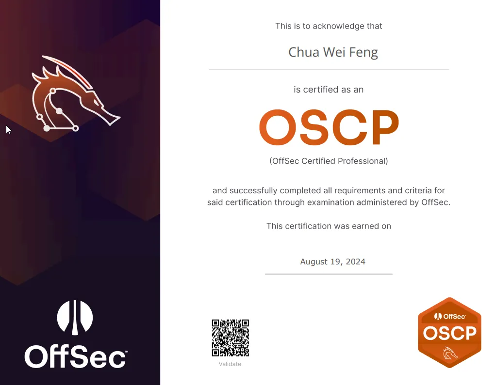
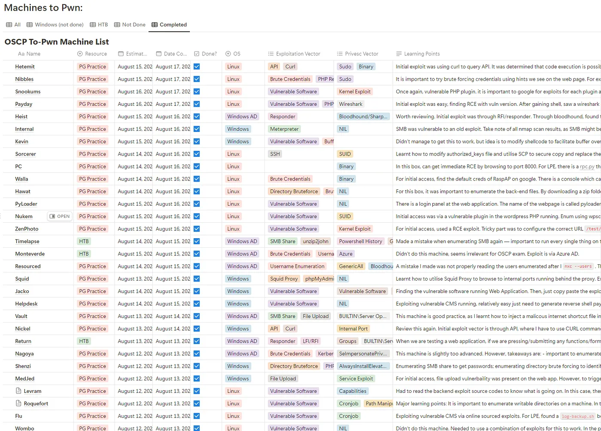
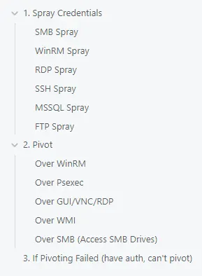
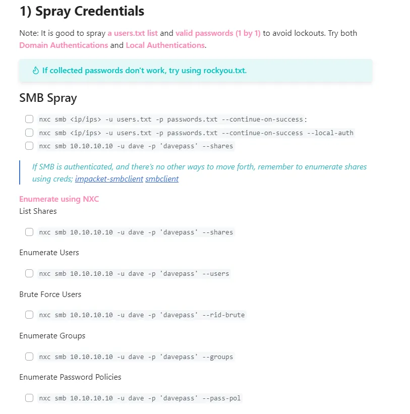
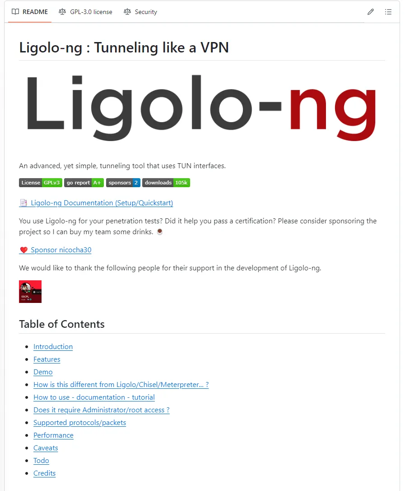
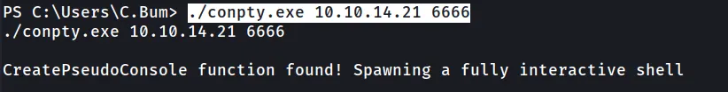
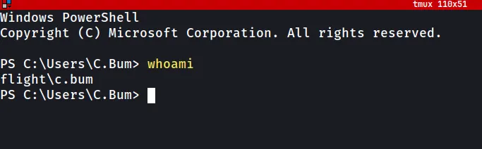

Hi everyone! I'm excited to share that I've managed to pass my OffSec Certified Professional (OSCP) exam. I was from Singapore Polytechnic's Diploma in Infocomm Security Management, and I previously took certifications such as the Certified Ethical Hacker and eJPT due to my interest in the penetration testing field.

Listening to all the stories about people struggling to pass the exam within 24 hours left me feeling a mix of nervous anticipation and dread, but it also seemed like an exciting challenge.
The Journey
In order to prepare for the OSCP, I dedicated hours to practicing on platforms like TryHackMe, HackTheBox, and OffSec's Proving Grounds. Each machine I tackled taught me something new — whether it was refining my enumeration techniques, sharpening my skills, or identifying privilege escalation vectors. The key to success, I found, was consistency and perseverance.
Every machine has its own vulnerabilities; one can never be "fully prepared" for the OSCP. However, the takeaways from practicing numerous machines, and honing the "try harder" mindset was vital in passing the exam.

In preparation for the OSCP, I utilised the Lainkusanagi OSCP Like list of machines. This is a list of machines similar to TJNull's list, but with a slight difference. It is a good idea to keep a repository of pwned machines to easily revise the learning points of each practice. Whenever you learn something new, immediately add it to your current methodology.
Judgement Day
I started my exam at around 10AM; joined the proctor at 9.45AM, and managed to get the verification and setup of proctor software out of the way in 15 minutes.
I started off with the AD set first, as it has the most weightage (40 points). My strategy going into this exam was to pwn the AD Set (40 Points) + 1 Standalone (10 Points), as I already had 10 bonus points from completing the lab exercises.
Around 2 hours into the exam, I managed to get initial access into the AD Set. Pivoting was the toughest part — it held me back another 2 hours. However, upon careful and thorough enumeration, I was able to get hold of the necessary credentials needed to gain root on the Domain Controller.
For standalone sets, I briefly enumerated each machine using RustScan. I then decided to attack Standalone 2 first, as I'm more familiar with some of the services running. Personally, the standalone sets were the hardest (harder than the AD set) to pwn. It took me around 5–6 hours to gain initial access, and another 30 minutes on privilege escalation.
In total, I spent around ±12 hours for 1 AD Set + 1 Standalone Machine.
My Methodology
Throughout the journey, I adhered to a methodical approach. I won't deep dive into the different phases (Enumeration → Initial Exploit → Post Enum → Privesc/Pivot → Post Enum), but it is important to note that you should have a checklist to ensure that you don't miss out anything.
For example, my Windows Lateral Movement Checklist: upon obtaining a pair of valid credentials, or whenever I suspect a particular string may be a potential password, I perform a NetExec spray across open services:

- SMB
- WinRM
- RDP
- SSH
- MSSQL
- FTP

Documentation was another critical aspect. Keeping detailed notes and screenshots serves as a valuable reference when you redo the machines again and when writing the final report.
Useful Resources
The first tool that comes to mind is definitely Ligolo.

Ligolo is a lightweight, user-friendly tool used for creating reverse tunnels, enabling users to establish secure connections back to their own machines from compromised systems.
As opposed to setting up manual tunnels, Ligolo is particularly useful when pivoting in an Active Directory network. Highly recommend everyone to learn this tool — it can make your life very easy during the exam.
Another tool I used was ConPtyShell; using this tool, I was able to obtain a fully interactive reverse shell for Windows systems. I'd recommend using ConPtyShell on machines that you plan to run Ligolo on — this will make your life easier, as you will not need to keep spawning your original netcat reverse shell listener whenever the Ligolo agent dies.


The machines that resemble the actual OSCP exam the most are the OSCP A/B/C set. Ensure that you understand the key concepts in pivoting on the Active Directory set, since it is one of the most important aspects of the exam (weightage of 40 points).
Last but not least, I highly recommend the note-taking app Obsidian. You can easily search for specific keywords in your entire vault — an important feature if you want to quickly find previous examples from other machines you've pwned. For example, searching for sqli will pull up every machine where you've used SQL Injection as an exploit vector.
Main Takeaways & Parting Comments
One last thing I want to share — not just for the OSCP certification but for anything we do in life — is the importance of these two principles: Murphy's Law and KISS.
Murphy's Law
Murphy's Law states: "Anything that can go wrong, will go wrong." It emphasises that if there is a possibility for something to go wrong, it likely will — often at the worst possible time.
It is always, always important to fully understand and grasp a concept before moving on. The "aiyah, where got so suey, it won't come out" mentality can lead to unforeseen consequences. Murphy's Law teaches us to never underestimate the potential for things to go wrong — to prepare thoroughly and consider all possible outcomes, no matter how unlikely they may seem.
So the next time you're tempted to skip over a detail, remember Murphy's Law. It's not about being pessimistic; it's about being prepared, meticulous, and always expecting the unexpected.
KISS (Keep It Simple, Stupid)
The KISS principle emphasises simplicity and avoiding unnecessary complexity. By keeping things simple, you reduce the likelihood of errors, make solutions more robust, and improve usability.
In the heat of the exam, it's easy to get caught up in trying advanced techniques. However, more often than not, the simplest solution is the most effective. Some examples:
- Instead of blindly trying exploits, have you thought about what services or ports are open/closed?
- Instead of resorting to brute force, have you tried default or simple credentials such as
admin:adminoradmin:password?
By keeping things simple, you not only improve your chances of success on the exam but also develop a more robust and reliable pentesting methodology for the real world.
I hope this post has helped and inspired other likeminded cybersecurity enthusiasts preparing for the exam.
Last but not least, this certification would not have been possible without the encouragement and inspiration of my Polytechnic lecturer Mr Boris, as well as my mentors from my previous internship company, friends, and fellow peers. Huge thank you to everyone that has been a part of my journey! :)